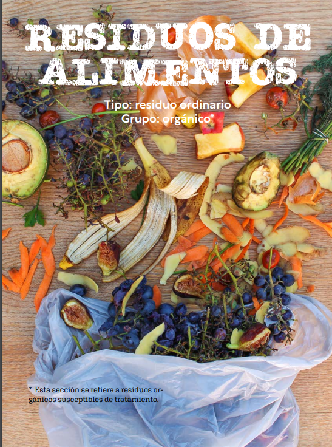
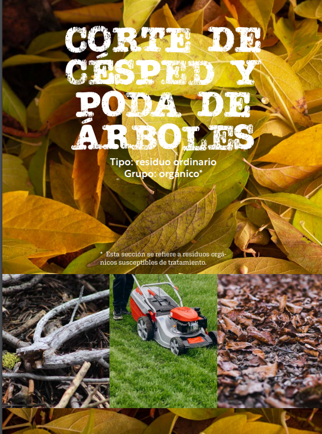

Estos residuos se pueden usar para hacer compost ♻️, que es un abono natural para las plantas 🌿🌍. ¡Asà ayudamos a reducir la basura y cuidamos el medio ambiente! 💚✨

Usos de los residuos Orgánicos
Aprendiente con el profe Marlon
Los residuos orgánicos 🌱 tienen muchos usos que ayudan al planeta ğŸŒ.
Respuesta: El compostaje ♻️ es un proceso natural en el que los residuos orgánicos 🌱, como restos de frutas ğŸŒ, verduras 🥕 y hojas 🍂, se descomponen y se convierten en abono 🌿 para las plantas. Esto ayuda a reducir la basura 🗑️ y a mejorar el suelo para sembrar 🌾. ¡Es una forma fácil y ecológica de cuidar el planeta! 🌍💚✨
Acá te cuento, en que consiste y lo fácil que para que con ayuda de tus padres pueda implementarlo en tu casa.👇
Para continuar debes dar clic en la opción "siguiente", ubicado en la parte inferior derecha, para continuar con esta aventura. ⬇️💪